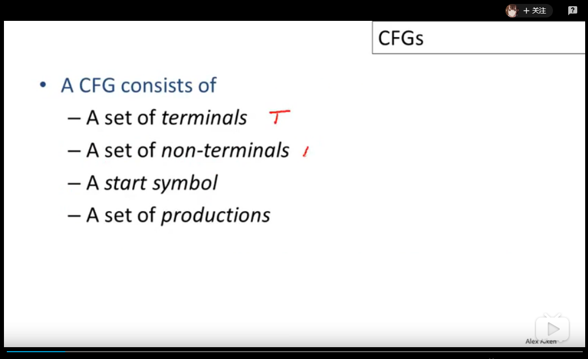
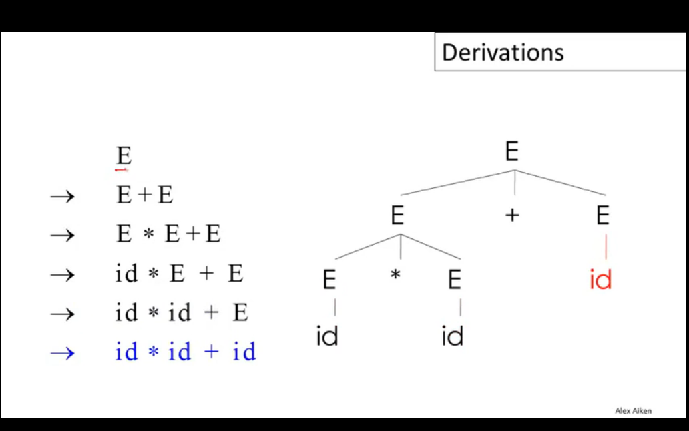
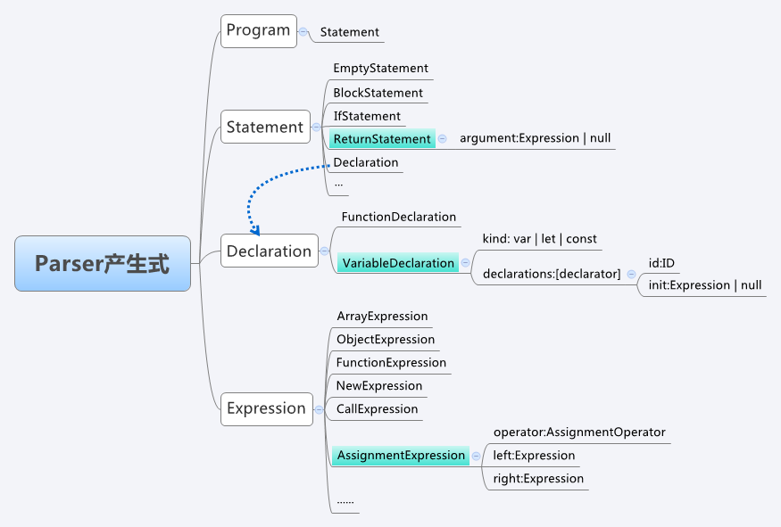
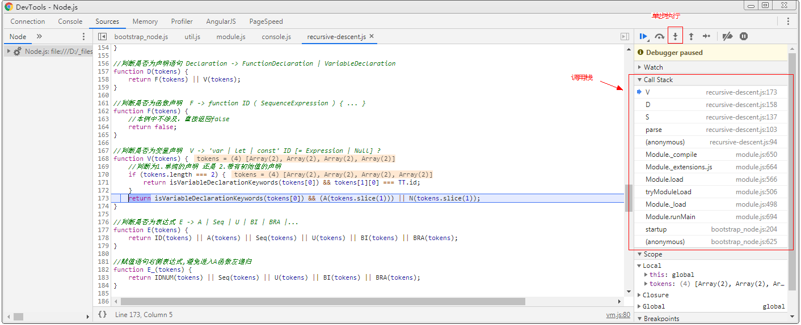

目录
示例代码托管在：http://www.github.com/dashnowords/blogs
博客园地址：《大史住在大前端》原创博文目录
华为云社区地址：【你要的前端打怪升级指南】
B站地址：【编译原理】
Stanford公开课：【Stanford大学公开课官网】
课程里涉及到的内容讲的还是很清楚的，但个别地方有点脱节，建议课下自己配合经典著作《Compilers-priciples, Techniques and Tools》(也就是大名鼎鼎的龙书）作为补充阅读。
词法分析阶段的任务是将字符串转为Token组，而Parse阶段的目标是将Token变为Parse Tree，本篇只是这部分内容最基础的一部分。
CFG即context free grammer，定义一种CFG语法规则需要声明如下特征：

CFG的语法下，产生符号->左右两侧可以互相替代）CFG的基本转换流程如下：

从隶属于开始集S开始，尝试将字符串中的非终止符X替换为终止集的形式(X->Y1Y2...Yn)，重复这个步骤直到字符串序列中不再有非终止符。这个过程被称为Derivation(派生)，它是一系列变换过程的序列，可以转换为树的形式，树的根节点即为起始集合S中的成员，转换后的每个终止集以子节点的形式挂载在根节点下，这棵生成的树就被称为Parse Tree,可以看出最后的结果实际上就是Parse Tree的叶节点遍历结果。
当需要转换的非终结字符有多个时，需要按照一定的顺序来逐个推导，派生过程可以按照left-most或right-most进行，但有时会得到不同的合法的转换树，通常会通过修改转换集语法或设定优先级来解决。
Recursive Descent是一种遍历parse tree的策略，是一种典型的递归回溯算法，从树的根节点开始，逐个尝试当前父节点上记录的非终止字符能够支持的产生规则，并判断其子节点是否符合这样的形式，直到子节点符合某个特定的产生式规则，然后再继续递归进行深度遍历，如果在某个非终止节点上尝试完所有的产生式规则都无法继续向下进行使得子树的叶节点都符合终止符号集，则需要通过回溯到上一节点并尝试父节点的下一个产生式规则，使得循环程序可以继续向后进行。课程里用了很多的数学符号定义和伪代码来描述递归遍历的过程，如果觉得太抽象不好理解可以暂时略过。需要注意左递归文法会使得递归下降遍历进入死循环，在文法设计时应该避免，龙书中也提供了一种通用的拆分方法来解决这个问题。
【声明】由于课程中并没有看到从
tokens到parse tree的全貌，只能先逐步消化基础知识。下文的过程只是笔者自己的理解（尤其是逐行分析的形式，因为尚未涉及任何结构性语法，所以通用性还有待考量），仅供参考，也欢迎交流指正。但对于直观理解递归下降法而言是足够的。
本节中使用JavaScript来实现递归下降遍历，目标代码仍是上一篇博文中的示例代码：
var b3 = 2;
a = 1 + ( b3 + 4);
return a;经过上一节的分词器后可以得到下面的词素序列：
[ 'keywords', 'var' ],
[ 'id', 'b3' ],
[ 'assign', '=' ],
[ 'num', '2' ],
[ 'semicolon', ';' ],
[ 'id', 'a' ],
[ 'assign', '=' ],
[ 'num', '1' ],
[ 'plus', '+' ],
[ 'lparen', '(' ],
[ 'id', 'b3' ],
[ 'plus', '+' ],
[ 'num', '4' ],
[ 'rparen', ')' ],
[ 'semicolon', ';' ],
[ 'keywords', 'return' ],
[ 'id', 'a' ],
[ 'semicolon', ';' ]语法分析是基于语法规则的，所谓语法规则，通常是指一系列CFG表示的产生式，大多数开发者并不具备设计一套语法规则的能力，此处直接借鉴Mozilla中的Javascript引擎SpiderMonkey中的文法定义来进行基本产生式，由于Javascript语言中涉及的文法非常多，本节只筛选出与目标解析式相关的一部分简化的语法规则（图中标记为蓝色的部分）：

完整的语法规则可以查看【SpiderMonkey_ParserAPI】进行了解。
我们把上面的目标解析代码当做是一段Javascript代码，自顶向下分析时，根节点的类型是Program，它可以由多个Statement节点（语句节点）构成，所以本例中进行简化后以semicolon（分号）作为词素批量处理的分界点，每次将两个分号之间的部分读入缓冲区进行分析，由于上例中均为单行语句，所以理解起来比较简单。
在更为复杂的情况中，代码中包含条件语句,循环语句等一些结构化的关键词时可能会存在跨行的语句，此时可以在递归下降之前先对缓冲区的词素队列进行基本的结构分析，如果发现匹配的结构化模式，就从tokens序列中将下一行（或多行）也读入缓冲区，直到缓冲区中的所有tokens放在一起符合了某些特定的结构，再开始进行递归下降。
为方便理解，本例中均使用关键词缩写来表示可能的语法规则集，如果你对Javascript语言有一定了解，它们是非常容易理解的
/**
* 文法定义-生产规则
* Program -> Statement
* P -> S
*
* 语句 -> 块状语句 | if语句 | return语句 | 声明 | 表达式 |......
* Statement -> BlockStatement | IfStatement | ReturnStatement | Declaration | Expression |......
* S -> B | I | R | D | E
*
* B -> { Statement }
*
* I -> if ( ExpressionStatement ) { Statement }
*
* R -> return Expression | null
*
* 声明 -> 函数声明 | 变量声明
* Declaration -> FunctionDeclaration | VariableDeclaration
* D -> F | V
*
* F -> function ID ( SequenceExpression ) { ... }
*
* V -> 'var | let | const' ID [= Expression | Null] ?
*
* 表达式 -> 赋值表达式 | 序列表达式 | 一元运算表达式 | 二元运算表达式 |......
* Expression -> AssignmentExpression | SequenceExpression | UnaryExpression | BinaryExpression | BracketExpression......
* E -> A | Seq | U | BI | BRA |...
*
* A -> E = E //赋值表达式
*
* Seq -> ID,ID,ID//类似形式
*
* //一元表达式
* U -> "-" | "+" | "!" | "~" | "typeof" | "void" | "delete" E
*
* //二元表达式
* BI -> E "==" | "!=" | "===" | "!=="
| "<" | "<=" | ">" | ">="
| "<<" | ">>" | ">>>"
| "+" | "-" | "*" | "/" | "%"
| "|" | "^" | "&" | "in"
| "instanceof" | ".." E
*
* //括号表达式
* BRA -> ( E )
*
* N -> null
*/需要额外注意的是表达式Expression到赋值表达式AssignmentExpression的产生式，E的判断规则里需要判断A，而A的逻辑里又再次调用了E，这里就是一种左递归，如果不进行任何处理，在代码运行时就会陷入死循环然后爆栈，这也就是前文强调的需要在语法产生式设计时消除左递归的场景。这里并不是说spiderMonkey的parserAPI是错的，因为消除左递归的语法改造只是一种等价形式的转换，是为了防止产生式产生无限递推（或者说程序实现时进入无限递归的死循环）而做的一种形式处理，改造的过程可能只是引入了某个中间集合来消除这种场景的影响，对于最终的语法表意并不会产生影响。
下文示例代码中并没有进行严谨的"左递归消除"，而是简单地使用了一个E_集合，与原本的E进行一些微小的差异区分，从而避免了死循环。
下面将上一小节的语法规则进行代码翻译（只包含部分产生式的推导，本例中的完整代码可以从demo或代码仓中获取）：
//判断是否为Statement
function S(tokens) {
//把结尾的分号全部去除
while(tokens[tokens.length - 1][0] === TT.semicolon){
tokens.pop();
}
return B(tokens) || I(tokens) || R(tokens) || D(tokens) || E(tokens);
}
//判断是否为BlockStatement B -> { Statement } (本例中并不涉及本方法，故暂不考虑末尾分号和文法递归的情况)
function B(tokens) {
//本例中不涉及，直接返回false
return false;
}
//判断是否为IfStatement I -> if ( ExpressionStatement ) { Statement }
function I(tokens) {
//本例中不涉及，直接返回false
return false;
}
//判断是否为ReturnStatement R -> return Expression | null
function R(tokens) {
return isReturn(tokens[0]) && (E(tokens.slice(1)) || N(tokens.slice(1)[0]));
}
//判断是否为声明语句 Declaration -> FunctionDeclaration | VariableDeclaration
function D(tokens) {
return F(tokens) || V(tokens);
}
//判断是否为函数声明 F -> function ID ( SequenceExpression ) { ... }
function F(tokens) {
//本例中不涉及，直接返回false
return false;
}
//判断是否为变量声明 V -> 'var | let | const' ID [= Expression | Null] ?
function V(tokens) {
//判断为1.单纯的声明 还是 2.带有初始值的声明
if (tokens.length === 2) {
return isVariableDeclarationKeywords(tokens[0]) && tokens[1][0] === TT.id;
}
return isVariableDeclarationKeywords(tokens[0]) && (A(tokens.slice(1))) || N(tokens.slice(1));
}
//....其他代码形式雷同，不再赘述解析时默认每次遇到一个分号时表示一个statement的结束，前文已经提及过对于多行语句的处理思路。实现时只需要将tokens序列一点点读进buffer数组并从顶层的S方法启动分析，即可完成自顶向下的推理过程。
/**parser */
function parse(tokens) {
let buffer = nextStatement(tokens);
let flag = true;
while (buffer && flag){
if (!S(buffer)) {
console.log('检测到不符合语法的tokens序列');
flag = false;
}
buffer = nextStatement(tokens);
}
//如果没有出错则提示正确
flag && console.log('检测结束，被检测tokens序列是合法的代码段');
}
//将下一个Statement全部读入缓冲区
function nextStatement(tokens) {
let result = [];
let token;
while(tokens.length) {
token = tokens.shift();
result.push(token);
//如果不是换行符则
if (token[0] === CRLF) {
break;
}
}
return result.length ? result : null;
}
单步执行查看计算过程可以帮助我们更好地理解递归下降法的执行过程：
在demo所在目录下打开命令行，输入：node --inspect-brk recursive-descent.js，然后单步执行就很容易看出代码在执行过程中如何实现递归和回溯：

单纯地递归下降法最终的结果只找出了不满足任何语法规则的语句，或是最终所有语句都符合语法规则时给出提示，但并没有得到一个树结构的对象，也没有向下一个环节提供输出，如何在编译过程中与后续环节进行连接还有待探索。